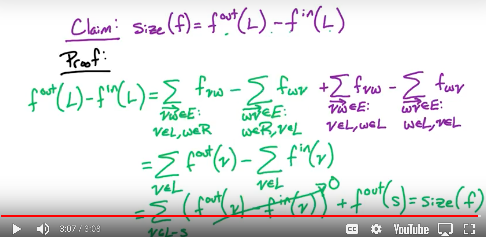

Min-cut=Max-flow
Concepts
- Min-cut=Max-flow: The size of max-flow on a flow network is the min-cut capacity of the st-cut.
- A cut (L, R) is a partition of V = L U R.
- st-cut: The cut is identified by the vertex s and vertex t, where are the source and target of the flow-network.
- Capacity(L,R): sum of weight of all out-edges from L to R
size(f) = f_out(L) - f_in(L)
Size of a flow is the out-flow across the cut substracts the in-flow across the cut.
Intution: size(f) = f_out(s), f_in(s) = 0; all other vertices except s and t have f_in = f_out

size(f*) = cap(L,R)
- f* is generate by Ford-Fulkerson algorithm so we have there does not exist a st-path on the residual network.(1)
- The out-edge across from L to S must disappear in the residual network, otherwise it violates (1). If an edge disappear in the residual network, it means it is fully occupied. So f*_out(L) = sum(out-edge weight) = cap(L,R)
- The in-edge across from L to S must have flow 0 otherwise, it has create an out-edge from L to S in the residual network, which violates (1). So f*_in(L) = 0
- Therefore, size(f*) = f*_out(L) - f*_in(L) = cap(L,R)
Proof
I. max size(f) <= min cap(L,R)
max-flow <= min st-cut is equalient to any flow <= any st-cut
size(f) = f_out(f) - f_in(L) <= f_out(f) <= cap(L,R)
II. max size(f) => min cap(L,R)
Because max flow(f) >= size(f*) = cap(L,R) >= min cap(L,R), we have max size(f) => min cap(L,R)
Even though we know ford-fulkerson can generated the max-flow, but since we did not prove, so we have max-flow >= f*
Edmonds-Karp Algorithm